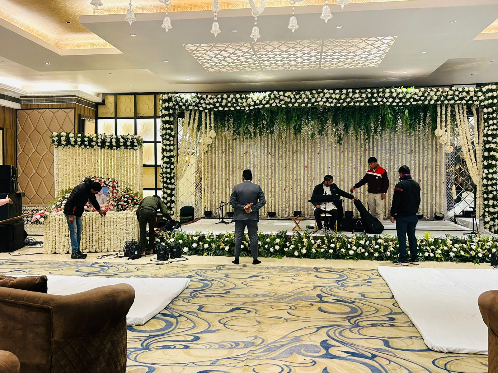

Best Flower Decoration Service for Shok Samaroh in RDC Ghaziabad (On Time & Within Budget)

Memorial Ceremony Flower Decoration
Recently, humne RDC Ghaziabad mein ek shok samaroh (condolence ceremony) ke liye white flower decoration provide ki. Yeh decoration ek elderly lady ki remembrance ke liye tha. Family ne simple, peaceful aur respectful flower decor chaha tha. Humari team ne ceremony ke emotions ko samajhte hue pure white theme floral decoration plan ki, jo bilkul dignified aur sober look de.
Is setup mein photo decoration aur separate stage decoration dono include the. Photo frame par humne white flower mala lagayi, jisme white guldavari, white daisy, white baby breath aur thode pink carnation ka soft touch diya gaya. Yeh combination photo ko clean aur respectful look deta hai, jo shok samaroh ke liye perfect hota hai.

Shok Samaroh White Flower Decoration
Stage decoration ke liye humne white roses, guldavari, green leaves, green grass fillers aur fresh white flowers ka use kiya. Pura stage ek calm aur peaceful environment create kar raha tha. White aur green color combination shok samaroh decoration ke liye sabse zyada preferred hota hai, kyunki yeh purity aur respect ko represent karta hai.
Sabse important baat yeh rahi ki poori flower decoration time par complete ki gayi. Hum sirf fresh flowers ka use karte hain, jo ceremony ke poore time tak fresh aur elegant dikhein. Hamari team ke ladke experienced hain, isliye kaam bilkul professional tareeke se, bina kisi delay ke complete hua. Customer ka feedback bhi kaafi positive raha aur woh kaam se fully satisfied the.

Condolence Ceremony Decoration in Raj Nagar
Agar aap RDC Ghaziabad ya nearby areas mein shok samaroh flower decoration, condolence ceremony decoration, ya white flower stage decoration ke liye ek reliable, on-time aur budget-friendly florist dhoondh rahe ho, to hum aapki madad kar sakte hain. Hum best flower decoration service for shok samaroh in Ghaziabad provide karte hain respect, quality aur time commitment ke saath.